CHAPTER 02 / 큰 그림
명령어 하나의 여행
가져오기부터 커밋까지, 코어 안의 흐름을 연결합니다.
01공장처럼 나누어 일하기
한 명령어의 일을 작은 단계로 나누면 여러 명령어가 서로 다른 단계에서 동시에 진행할 수 있습니다. 이 방식이 파이프라이닝입니다. 한 물건의 완성 시간이 그대로여도 공장의 단위 시간당 생산량은 늘어날 수 있습니다.
ANIMATED LAB / PIPELINE
겹쳐 실행하면 무엇이 달라질까요?
같은 명령어를 한 개씩 끝낼 때와 단계별로 겹쳐 처리할 때를 비교하세요. 명령어 수를 늘려 처리량의 차이를 관찰해 보세요.
독립적인 명령어, 단계당 1사이클, 폭 1, 대기 없는 5단계 교육 모형입니다. XiangShan의 실제 단계 수·폭·IPC와 다릅니다.
02앞에서는 공급하고, 뒤에서는 실행한다
프런트엔드는 다음에 읽을 주소를 예측하고 명령어를 가져옵니다. 백엔드는 명령어를 해석하고 피연산자와 실행 자원이 준비된 작업을 고릅니다. 메모리 명령어는 Load/Store 경로를 통해 데이터를 읽거나 씁니다.
03실행 완료와 커밋은 다르다
연산 결과가 준비되는 순간과 그 결과를 프로그램의 확정된 상태로 인정하는 순간은 다릅니다. 비순차 실행 코어는 먼저 끝난 결과도 보관했다가, 앞선 명령어에 문제가 없을 때 순서대로 커밋합니다. 아래 구조도는 기능 관계를 요약하며 실제 단계 수나 배선을 나타내지 않습니다.

서로 다른 명령어가 겹쳐 진행해도 프로그램이 관찰하는 결과는 올바르게 유지해야 합니다.
CHECK YOUR UNDERSTANDING
확인해 볼까요?
명령어의 실행이 끝나면 항상 즉시 커밋할 수 있을까요?
정답과 해설 보기
정답 2. 정확한 예외와 프로그램 순서를 유지하려면 앞선 명령어를 고려해야 합니다.
더 깊이 읽기
Kunminghu V2 설계 문서 ↗읽음 표시는 이 브라우저에만 저장됩니다.